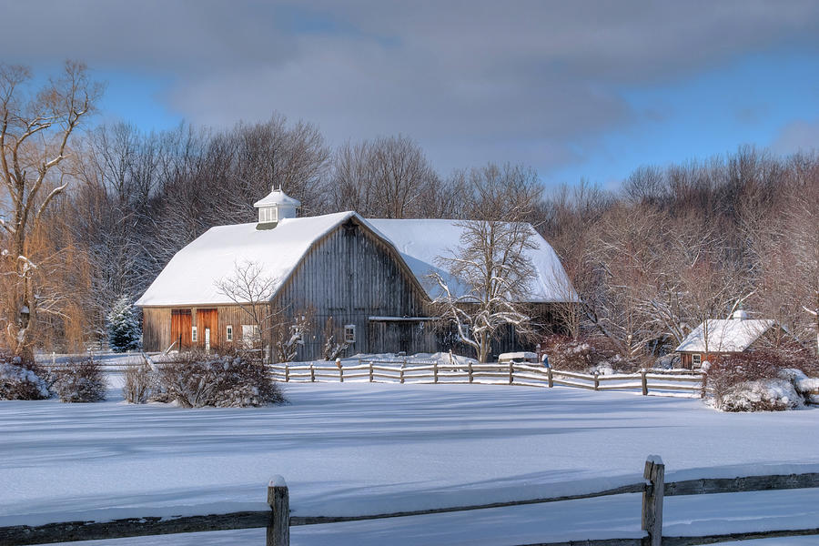

Winter brings holiday cheer, fresh wreaths, and Christmas tree traditions at Hollow Creek Farm. Families can explore the Holiday Market, choose their perfect tree, and shop farm-made gifts all season long.
Local artisans and farm-made gifts featured during the first December weekends.
Pre-cut and choose-and-cut Christmas trees available throughout the holiday season.
Handmade wreaths and greenery decorations sold daily during the winter months.
Farm store remains open year-round with reduced hours through early spring.